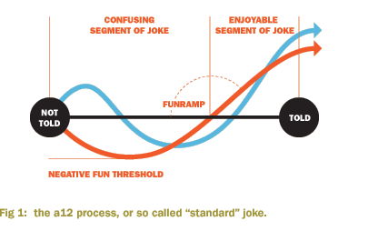
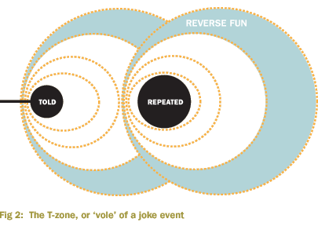
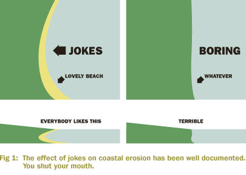

This is because in the modern world of today's contemporary current new lifetsyle trends, nobody minds if a joke is made; often nobody pays attention to entire salvos of joking, entire days of jokish behaviour and even mad, four day binges of hilarity referred to in underground circles as 'laugh mats'. It's safe to say that you could fly a plane filled with jokes into the world trade centre, and nobody would bat an eyelid; They'd just laugh.
But is laughing just a laugh? Is it really just the fun and games that once followed us home from school, or is it of an altogether less funny nature than the innocent words "having a laugh" would imply?
As early as the sixteenth century, scientific studies were made of the joke process. Obviously sixteenth century science was unimaginably rubbish, in fact when we examine documents of the time we find that your sister did more science in 1982 than the whole world did in the early sixteenth century; but the small mind of the pigeonlike middle ages proto-human had still noticed an intangible something in what is now called the a12 process.

Using strips of bark and a type of copper wire which is impossible to fabricate even with today's technology, these supposedly rubbish scientists had actually roughed out a system which would form the foundation of all human research in the field of hahology. In fact, it could easily be said (providing not that many people were listening) that this was in fact the birthtime of hahology as a discipline. In fact, it was said. And I just said it again, making two sayings.
What these ball-licking imbeciles had stumbled upon like gay drunks at a Manowar concert was the secret of the modern joke. What hahologists refer to technically as a piezo-helical trifrontal bisymmetrical atoid field is what most of the laymen of the land would understand as a feeling of afterfun in the immediate T-zone of a limited non-inverse joke event.

The first scientific paper on jokes proper was Thomas Hackett's My friend Ken is a man called Ken in 1534. Badly injured in a spanish joking contest, Sir Hackett devoted the rest of his life, the remainder of his money, and the front part of his needy face to the study of the jokes that had so nearly killed him. Attaching feathers to fishing wire, and using the elevation of the noonday sun, he noted changes in amplitude of a given joke relative to moisture and distance to sea, and developed the hackett scale to better guage the efficiency of delivery at altitude. His exhaustive records and analyses provided the basis for a later thesis of Lloyd Harris-Bentnarrowly in 1580, but was for the intervening time the only work in the field.
The 1580s were of course to give birth to an unexpected year, Fifteen Eightytwelve, which provided the necessary extra time to make this an exceptional year in all sciences, even more fringe sciences such as looking at cats, or sighing. In fact, more scientific advances were made in the 1580s than in any year previous, which caused a scandal and most of the discoveries had to be given back. We were not to see another surprise year for quite some time; and indeed by the 1590s people were telling each other to shut up all the time, because everyone knew such a huge amount, and were to a large extent showing off.
It is of ironic note that this period - the founding period for the western study of the joke - was not in the least bit funny.
By this stage, people had begun to notice patterns of coastal erosion in areas of high funniness which seemed atypical. Less amusing portions of coastline were being eroded at a much faster rate than in hilarious areas, and the generality of most major landmass distribution also seemed to have been affected in ways that many were too shy to describe, though their hints speak volumes. Dr Wanton Crispbag, a general practitioner of the time, walked into rooms and kind of pointed at things, and we have worked out a lot from these hints.

But shy as they were, these scientists were attratcing money: After a substantial portion of time had been cut from the timecake and duly eaten by the days of yore, insurance and real estate took an interest in the associated phenomena of comederosion, and the resultant upsurgence in sponsorship of hahology led to the level of understanding experienced by many today.
Groynes, for example, the wooden walls on a beach designed to limit beach erosion, are a result of this reasearch. Their effect on erosion is nothing to do with their shapm or anchoring sand, it is because the word 'groyne' is quite a funny word.
A modern shiny reader of a publication such as HSM might duly wonder where we're going with all of this delving into the past. Like a harassed single parent, you're probably hoping we'll just come in from the garden, do our homework and go to bed so you can have anxious sex with your neighbour. But we assure you that if you bear with us, and allow us to explain something that has been so firmly lodged in the back pants of wisdom that few dare even touch it, then a rare shiny treat-treat of science is only around the mataphorical corner; The metaphorical corner of a square pile of hats.
We all know that when a joke is told, a chain reaction of sorts takes place in three parallel spaces: the space inside our heads, which is mushy and warm, the space of words, which is floaty, and the third space: the space of joke space, or the jokeosphere; this is something we all accept as unmistakeably as "last tuesday happened" or "tracey is a slag". Of course, tracey is a slag, but more about that later.
Another common piece of knowledge is the peculiar effect of gravity on Jokes - try telling a joke vertically upwards, and notice that nobody more that three feet above you will find it funny. Yet jokes told downards - even terrible ones about your mother - are hilarious.